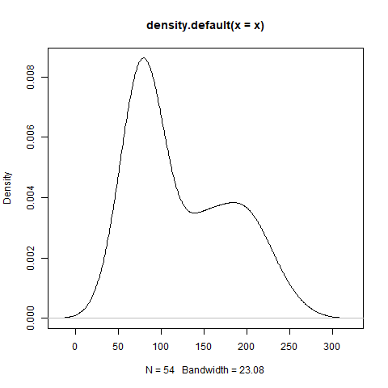
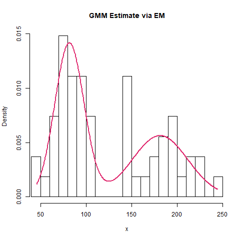

Lets create a dataset which appears to be a mixture of two separate distributions. Such a dataset can be created using the following code:
# Creating simulated bimodal data observations.
options(scipen=9999)
set.seed(516)
x = c(
rnorm(31, mean=75, sd=17.5) + rnorm(31, mean=0, sd=5.5),
rnorm(23, mean=175, sd=25) + rnorm(23, mean=0, sd=10)
)Running plot(density(x)) generates a plot of the kernel density estimate:

Our goal is to fit a 2-component Gaussian Mixture Model (GMM) to a dataset consisting of \(N\) observations using Expectation Maximization with parameters \(\mu_{k}, \sigma_{k}, \pi_{k}\) where \(k \in [1, 2]\).
The probability density of a K-component GMM is given by
\[ f(\boldsymbol{x}) = \sum_{k=1}^{K}\pi_{k} \cdot \mathcal{N}(\boldsymbol{x}| \mu_{k}, \sigma^2_{k}), \]
where in the 2 component case, \(K=2\) (however, expressions will be in terms of \(K\) for generality). From the density, an expression for the log-likelihood immediately follows:
\[ \mathrm{Ln}\hspace{.10em}f(X|\pi, \mu, \sigma) = \sum_{j=1}^{N}\mathrm{Ln}\hspace{.10em} \Big[\sum_{k=1}^{K} \pi_{k} \cdot\mathcal{N}(\boldsymbol{x}| \mu_k, \sigma^2_k)\Big]. \]
In the log-likelihood, \(\mu_{k}\), \(\sigma_{k}\) and \(\pi_{k}\) represent the mean, standard deviation and mixture coefficient respectively for component \(k\). The inner summation (indexed by \(k\)) iterates over mixture components while the outer summation (indexed by \(j\)) iterates over each observation in the data. Note that for each component \(k\), \(0 <= \pi_{k} <= 1\), and for a \(K\)-component GMM, vectors \(\boldsymbol{\mu}\), \(\boldsymbol{\sigma}\) and \(\boldsymbol{\pi}\) will each have length \(K\).
Taking the derivative of the log-likelihood w.r.t. \(\boldsymbol{\mu}\), \(\boldsymbol{\sigma}\) and \(\boldsymbol{\pi}\), setting equal to zero and re-arranging yields update expressions for the parameters of interest:
For the mean of component \(k\), \(\mu^{'}_{k}\):
\[ \mu^{'}_{k} = \sum_{j=1}^{N} \frac{x_{j} \cdot \pi_{k} \cdot \mathcal{N}(x_{j}| \mu_{k}, \sigma^2_{k})} {\pi_{k} \cdot \mathcal{N}(x_{j}| \mu_{k}, \sigma^2_{k})} \]
For the standard deviation of component \(k\), \(\sigma^{'}_{k}\):
\[ \sigma^{'}_{k} = \sqrt{\sum_{j=1}^{N} \frac{(x_{j} - \mu^{'}_{k})^{2} \cdot \pi_{k} \cdot \mathcal{N}(x_{j}| \mu_{k}, \sigma^2_r)} {\pi_{k} \cdot \mathcal{N}(x_{j}| \mu_k, \sigma^2_k)}} \]
For the mixture probability of component \(k\), \(\pi_{k}\), first note that the posterior probability of a single observation \(x\) originating from component \(k=z\) is given by
\[ f(z|x) = \frac{f(k=z) \cdot f(x|k=z)}{\sum f(k) \cdot f(x|k)} = \frac{\pi_{z} \cdot \mathcal{N}(x| \mu_{z}, \sigma^{2}_{z})}{\sum_{k=1}^{K} \pi_{k} \cdot \mathcal{N}(x| \mu_{k}, \sigma^{2}_{k})}. \]
\(\pi^{'}_{k}\) is updated by aggregating the probabilities for component \(k\) across all observations, then dividing by the total number of observations:
\[ \pi^{'}_{k} = \frac{1}{N}\sum_{j=1}^{N} f(k|x_{j}) = \frac{1}{N}\sum_{j=1}^{N} \frac{\pi_{k} \cdot \mathcal{N}(x_{j}| \mu^{'}_k, \sigma^{2*}_k)}{\sum_{r=1}^K \pi_{r} \cdot \mathcal{N}(x_{j}| \mu^{'}_{r}, \sigma^{2'}_{r})} \]
We can summarize Expectation Maximization as follows:
(E-step): Using current parameter values \((\mu_{k}, \sigma_{k}, \pi_{k})\), estimate the posterior probabilities of each mixture component \(\pi^{'}_{k}\).
(M-step): Using updated posterior probabilities, re-estimate component means and standard deviations \(\mu^{'}_{k}\), \(\sigma^{'}_{k}\).
Implementation
The code that follows represents an implementation of the Expectation Maximization algorithm for a two-component Gaussian Mixture Model. The initial estimates of \(\mu\), \(\sigma\) and \(\pi\) are obtained using k-means. We create a number of data structures to which parameter estimates and log-likelihood are saved at each iteration. Finally, parameter estimates are saved to the paramsDF0 data.table for comparison with estimates from the mixtools library:
# Implementation of the Expectation Maximization algorithm.
library("data.table")
library("foreach")
options(scipen=9999)
set.seed(516)
# Generate bimodal data to fit via GMM.
x = c(
rnorm(31, mean=75, sd=17.5) + rnorm(31, mean=0, sd=5.5),
rnorm(23, mean=175, sd=25) + rnorm(23, mean=0, sd=10)
)
n = length(x) # Number of observations.
r = 2 # Number of components in Gaussian Mixture Model.
maxIter = 500 # Maximum number of EM iterations.
tol = 1e-8 # Log-likelihood exceedance threshold.
# Use k-means to obtain initial parameter estimates.
km = kmeans(x, r)
# Create data.table with original observations and cluster assignments.
kmeansDF = setorder(
data.table(x=x, group=km$cluster, stringsAsFactors=FALSE),
"group"
)
# Bind reference to initial values for rmu, rsd and rpi.
rmu = kmeansDF[,.(x=mean(x)), by="group"]$x
rsd = kmeansDF[,.(x=sd(x)), by="group"]$x
rpi = kmeansDF[,.N, by="group"]$N / n
# Collect log-likelihood and updated parameter estimates at each iteration.
llEM = rep(0, maxIter)
muEM = matrix(rep(0, r * maxIter), ncol=r)
sdEM = matrix(rep(0, r * maxIter), ncol=r)
piEM = matrix(rep(0, r * maxIter), ncol=r)
# Initialize muEM, sdEM and piEM.
muEM[1,] = rmu
sdEM[1,] = rsd
piEM[1,] = rpi
# Iteration tracker.
jj = 2
# Expectation Maximization iteration.
# All m-prefixed variables have dimension (n x r).
# All r-prefixed variables have length r.
while (jj<=maxIter) {
# Expectation step.
mcomp = foreach(ii=1:r, .combine="cbind") %do% {
rpi[ii] * dnorm(x, rmu[ii], rsd[ii])
}
# Determine likelihood contribution for each observation.
# mcompSum is a vector of length n.
mcompSum = apply(mcomp, MARGIN=1, sum, na.rm=TRUE)
# Compute mixture probabilities for each observation. Summing across
# columns, each row will equal 1.0.
mpi = foreach(ii=1:ncol(mcomp), .combine="cbind") %do% {
mcomp[,ii] / mcompSum
}
# Maximization step.
rmu = as.numeric((t(x) %*% mpi) / apply(mpi, MARGIN=2, sum))
rsd = foreach(ii=1:length(rmu), .combine="c") %do% {
denom = sum(mpi[,ii][is.finite(mpi[,ii])], na.rm=TRUE)
numer = mpi[,ii] * (x - rmu[ii])^2
numer = sum(numer[is.finite(numer)], na.rm=TRUE)
sqrt(numer / denom)
}
rpi = foreach(ii=1:ncol(mpi), .combine="c") %do% {
sum(mpi[,ii][is.finite(mpi[,ii])], na.rm=TRUE) / n
}
# Update llEM, muEM, sdEM and piEM.
llEM[jj] = sum(log(mcompSum)); muEM[jj,] = rmu; sdEM[jj,] = rsd; piEM[jj,] = rpi
message(
"[", jj, "] ll=", llEM[jj], " (dll=", abs(llEM[jj] - llEM[jj-1]), ")."
)
if (abs(llEM[jj] - llEM[jj-1])<tol) {
break
}
jj = jj + 1
}
# Extract last populated row from muEM, sdEM and piEM.
paramsDF0 = rbindlist(
list(
data.table(
parameter="mean", w=seq(length(muEM[jj,])), value=muEM[jj,],
stringsAsFactors=FALSE
),
data.table(
parameter="sd", w=seq(length(sdEM[jj,])), value=sdEM[jj,],
stringsAsFactors=FALSE
),
data.table(
parameter="w", w=seq(length(piEM[jj,])), value=piEM[jj,],
stringsAsFactors=FALSE
)
), fill=TRUE
)
paramsDF0 = dcast(
paramsDF0, parameter ~ paste0("w_", w), fun.aggregate=sum,
value.var="value", fill=NA_real_
)The code generates a status message at each iteration indicating the current log-likelihood estimate (ll) as well as the change in log-likelihood from the previous estimate (dll). Results are given below.
[2] ll=-276.872839784171 (dll=276.872839784171).
[3] ll=-276.8390507688 (dll=0.0337890153707576).
[4] ll=-276.83590305353 (dll=0.0031477152705861).
[5] ll=-276.835432239165 (dll=0.000470814365030492).
[6] ll=-276.835356881754 (dll=0.0000753574105374355).
[7] ll=-276.835344544138 (dll=0.0000123376157148414).
[8] ll=-276.835342506099 (dll=0.00000203803961085214).
[9] ll=-276.835342168222 (dll=0.000000337876826961292).
[10] ll=-276.835342112125 (dll=0.0000000560970079277467).
[11] ll=-276.835342102806 (dll=0.00000000931919430513517).paramsDF0 reflects the final estimates of \(\mu_{i}\), \(\sigma_{i}\) and \(\pi_{i}\):
> paramsDF0
parameter w_1 w_2
1: mean 181.2244438 81.7632674
2: sd 30.6704024 16.0083545
3: w 0.4325322 0.5674678Comparison with mixtools Library
mixtools is a third-party R library used to estimate Gaussian Mixture Models. Using out data and initial estimates of \(\mu\), \(\sigma\) and \(\pi\), let’s compare the results of our implementation vs. the normalmixEM function provided by mixtools:
library("data.table")
library("mixtools")
gmm = normalmixEM(
x, k=2, lambda=piEM[1,], mu=muEM[1,],sigma=sdEM[1,]
)
# Create data.table containing normalmixEM parameter estimates.
paramsDF1 = data.table(
parameter=c("mu", "sigma", "pi"), stringsAsFactors=FALSE
)
for (ii in 1:r) {
paramsDF1[[paste0("comp", ii)]] = c(gmm$mu[ii], gmm$sigma[ii], gmm$lambda[ii])
}Let’s compare paramsDF0 with paramsDF1:
> paramsDF0
parameter w_1 w_2
1: mu 81.7632674 181.2244438
2: sigma 16.0083545 30.6704024
3: pi 0.5674678 0.4325322
> paramsDF1
parameter comp1 comp2
1: mu 81.7632740 181.2244778
2: sigma 16.0083538 30.6704046
3: pi 0.5674678 0.4325322We find the results to be almost identical.
Finally, we can create a density plot to illustrate the adequacy of the GMM fit to the data:
# Plot comparing empirical data with estimated mixture model.
exhibitPath = "C:/Users/i103455/Repos/Tutorials/Supporting/em2.png"
png(file=exhibitPath)
hist(x, prob=TRUE, breaks=23, xlim=c(min(x), max(x), main="GMM Estimate via EM")
xx = seq(from=min(x), to=max(x), length.out=500)
yy = rpi[1] * dnorm(xx, mean=rmu[1], sd=rsd[1]) + rpi[2] * dnorm(xx, mean=rmu[2], sd=rsd[2])
lines(xx, yy, col="#E02C70", lwd=2)
dev.off()Which results in:

We see that the model serves as a good representation of the underlying data.
Conclusion
One final note regarding Expectation Maximization estimates: This is taken from Christopher Bishop’s Pattern Recognition and Machine Learning, Chapter 9:
A K-component mixture model will have a total of \(K!\) equivalent solutions corresponding to the \(K!\) ways of assigning \(K\) sets of parameters to \(K\) components. In other words, for any given point in the space of parameter values there will be a further \(K! - 1\) additional points all of which give rise to exactly the same distribution. This problem is known as identifiability.
This means that for certain datasets, the parameters estimates from our implementation may differ from those found via mixtools, but for the purposes of finding a good density model, the difference is irrelevant since any of the equivalent solutions is as good as any other. Just be sure to perform a visual adequacy assessment to ensure the differences in parameter estimates do indeed result in identical or nearly identical probability densities.